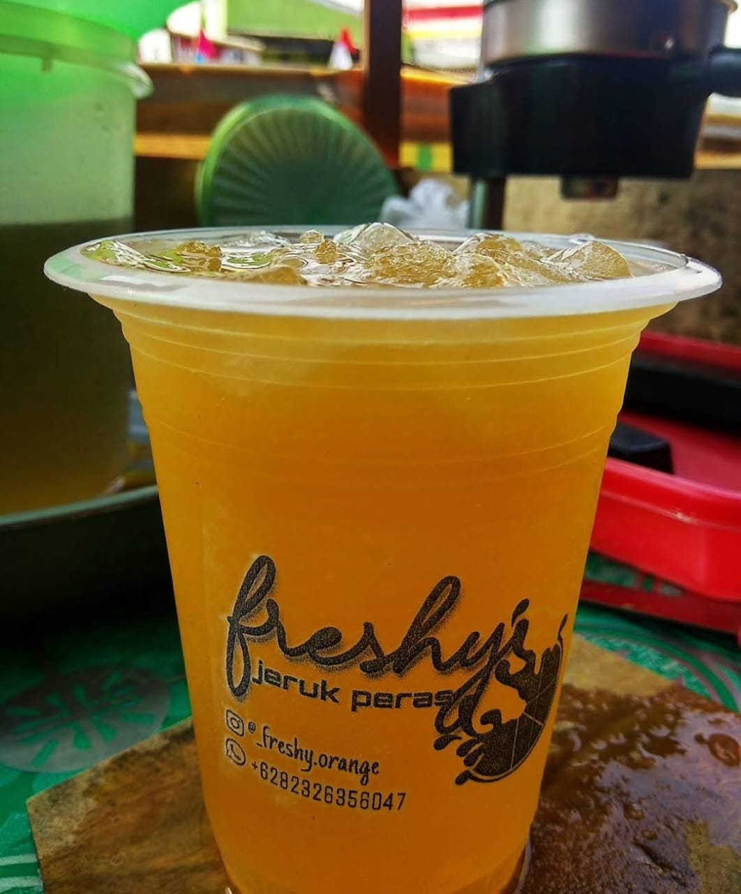

<!DOCTYPE html>
<html lang="en">
<head>
    <meta charset="UTF-8">
    <meta http-equiv="X-UA-Compatible" content="IE=edge">
    <meta name="viewport" content="width=device-width, initial-scale=1.0">
    <title>freshy jeruk peras</title>
    <link rel="stylesheet" href="style.css">
</head>
<body>
    
</body>
</html>

<!-- Header -->

<header>
    <nav>
        
        <ul>
            <li><a href="#home">home</a></li>
            <li><a href="#product">produk</a></li>
            <li><a href="#contact">tentang kami</a></li>
            <li><a href="#contact">hubungi kami</a></li>
        </ul>
        <a href="produk">pesan sekarang</a> 
     </nav>
</header>

<!-- Hero section -->
<section id="hero">
    <div class="hero-content">
        <h2>Rasanya Seger Bikin Tenggorokan Geter</h2>
        <p>Dari bulir jeruk dan 100% gula asli dijamin mantul..</p>
    </div>
    
</section>

<!-- Produk Section -->
<section id="products">
    <h2>produk unggulan kami</h2>
    <div class="products-lift">
        <div class="product">
            
            <h4>es jeruk</h4>
            <h2>Es jeruk adalah minuman segar yang terbuat dari perasan buah jeruk yang dipadukan dengan es.</h2>
            <div class="product">
                
                <h4>rujak</h4>
                <h2>Rujak adalah salah satu varian rujak khas Indonesia yang populer di daerah Jawa,khususnya disekitar Yogyakarta dan sekitarnya</h2>
                <div class="product">
                    
                    <h4>pecel</h4>
                    <h2>Pecel adalah salah satu masakan tradisional Indonesia yang terdiri dari sayuran rebus segar seperti kacang panjang,tauge, daun singkong, dan mentimun, yang disiram dengan sambal kacang yang gurih dan pedas</h2>
                </div>
            </div>
        </div>
    </div>
</section>

<!-- Testimoni Section -->
<section id="testimonials">
    <div class="testimonials">
        <h2>apa kata pelanggan kami</h2>
        <div class="testimoni">
            
            <h4>wahyu</h4>
            <h2>esnya seger gulanya asli dan manisnya pas</h2>
            <div class="testimoni">
                
                <h4>ibnu</h4>
                <h2>pecelnya bumbu kacangnya medok dan gurih saya suka</h2>
            </div>
    </div>
</section>

<!-- contact section -->
<section id="contact">
    <input type="text" placeholder="nama" required>
    <input type="email" placeholder="email" required>
    <textarea input="submit" placeholder="pesan" required></textarea>
    <a href="contact-us">Kirim</a>
</section>

<!-- footer -->
<footer class="social-icons">
    <form>

<p>Jl. raya Limpung - Bawang, Dukuh Sojomerto, Sojomerto, Kec. Reban, Kabupaten Batang, Jawa Tengah</p>
<p>&copy;freshy jeruk peras | 0823 2439 8451 nur aliyah</p>
</form>
</footer>
